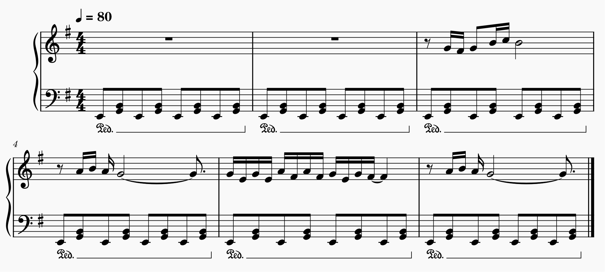
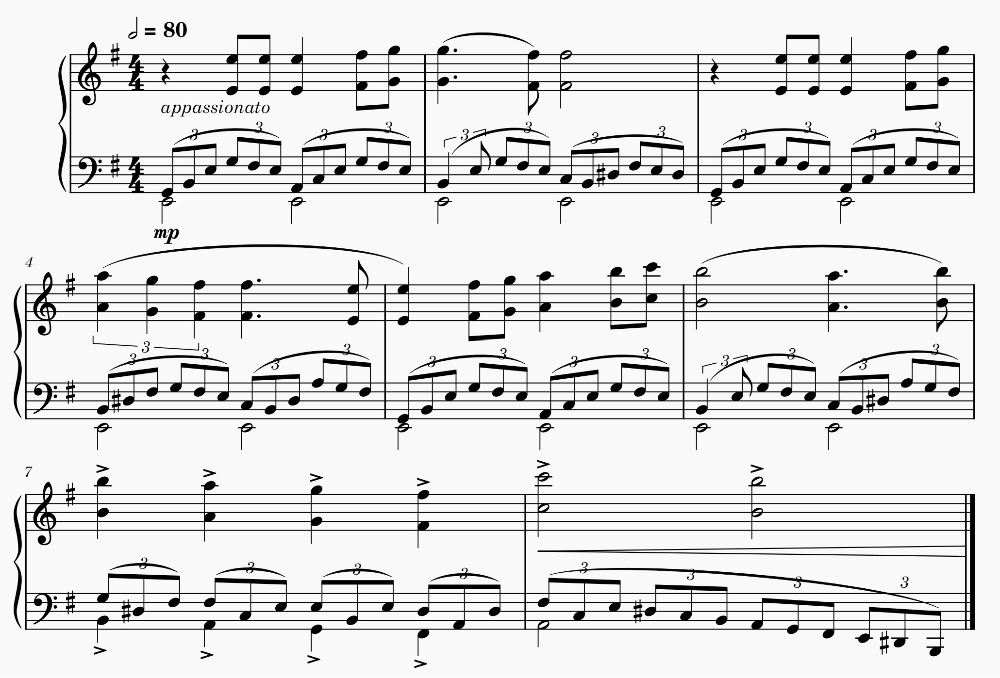

I am a self-taught classical composer. I am also passionate about learning how we learn. How do these two topics relate to each other? Read on to find out!
Learning is change. The change can be visible (like a change or acquisition of new behaviour), a view that is adopted by the behaviourists or it can be invisible (like a gaining knowledge about a topic), which would align with cognitivists. This change can be seen in many ways. In my experience composing, I can track my learning and improvement in my compositions by comparing the complexity of my previous works with my current ones. This can be complexity in terms of how detailed the melody or accompaniement are, what kinds of effects I am able to create, the complexity of the rhythms, etc.
Below is a snippet of a piano melody I came up with in high school. It is quite simple since the accompaniement is exactly the same throughout all the measures. The tonality or dynamics don't change in these measures, so nothing much is conveyed through this melody.
In comparison, this is a part of a piece I wrote two years ago. The accompaniement is much more complex since, there is some kind of upwards progression in the first notes of each slurred group of triplets. I have also learnt the importance of articulations, dynamic and expression markings which helped me convey even more. In this sense, the complexity of this piece is a lot higher than the piece from my high school.
Learning is often associated to the experiences we live 1. One's style of composition is often influenced by an experience they have lived, by another inspiring composer, or the music we listen to. One can learn patterns or textures in music by listening and analyzing pieces they enjoy. Although I like to experiment, my personal style is probably similar to the Late-Romantic era of classical music. I am inspired and learn from composers such as Dvorak, Chopin, Tchaikovsky, how to create large dramatic effects using a large orchestra. I learn how to capture emotions or a story through music.
Learning is also a very social. Learning often involves someone teaching you something, whether it is a physical teacher like in school, or an online teacher from a Youtube video, or from a book that teaches you something. Learning to compose is also a very social thing. One rarely writes music for themselves - they write it for someone to play it or someone to listen to it. A great quote from Victor Hugo expresses how music can teach you things that cannot be learnt in any other way:
One can learn to compose with a composition teacher, either at school or by finding a private teacher. Nowadays, there are many online communities of composers (like in Facebook groups) that are there to give advice on others' compositions and that can help inspire aspiring composers. Ertmer & Newby (year) realized that recently, much of our learning occurs through conversation because knowledge and other people are much more accessible through the Internet3.
I personally enjoy composing for large ensembles. My first serious composition was part of my high school graduating IB project, and I wanted to compose something for school band. To get started on the right foot, I seeked help from my former orchestra conductor, who is a well known composer in Canada, as well as my band teacher. My band teacher was especially helpful in helping write music that was actually playable for all instruments, and that was appropriate for the level of the band. She also helped me come up with ideas when I was stuck. In this sense, my teachers were crucial for me to learn how band orchestration works, but also how to create my own unique product.